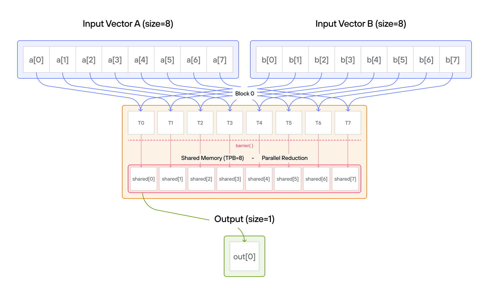
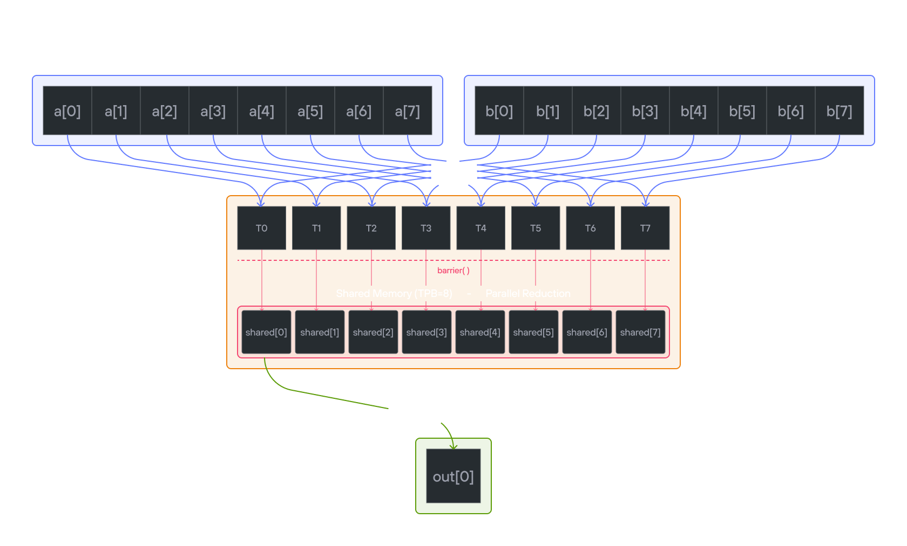

Puzzle 12: Dot Product
Overview
Implement a kernel that computes the dot product of 1D TileTensor a and 1D
TileTensor b and stores it in 1D TileTensor output (single number). The dot
product is an operation that takes two vectors of the same size and returns a
single number (a scalar). It is calculated by multiplying corresponding elements
from each vector and then summing those products.
For example, if you have two vectors:
\[a = [a_{1}, a_{2}, …, a_{n}] \] \[b = [b_{1}, b_{2}, …, b_{n}] \]
Their dot product is: \[a \cdot b = a_{1}b_{1} + a_{2}b_{2} + … + a_{n}b_{n}\]
Note: You have 1 thread per position. You only need 2 global reads per thread and 1 global write per thread block.


Key concepts
Parallel reduction is an algorithm that combines \(n\) values into one
using a binary operation (here, addition) in \(O(\log n)\) steps instead of
\(O(n)\) sequential steps. In each step, half the active threads each add one
value into another, halving the number of remaining partial results. After
\(\log_2 n\) steps, thread 0 holds the final sum. This tree-shaped computation
requires a barrier() between steps so no thread reads a partially-updated
value.
This puzzle covers:
- Similar to puzzle 8 and puzzle 11, implementing parallel reduction with TileTensor
- Managing shared memory using TileTensor with address_space
- Coordinating threads for collective operations
- Using layout-aware tensor operations
The key insight is how TileTensor simplifies memory management while maintaining efficient parallel reduction patterns.
Configuration
- Vector size:
SIZE = 8elements - Threads per block:
TPB = 8 - Number of blocks: 1
- Output size: 1 element
- Shared memory:
TPBelements
Notes:
- TileTensor allocation: Use
stack_allocation[dtype=dtype, address_space=AddressSpace.SHARED](row_major[TPB]()) - Element access: Natural indexing with explicit bounds guards
- Layout handling: Separate layouts for input and output
- Thread coordination: Same synchronization patterns with
barrier()
Code to complete
comptime TPB = 8
comptime SIZE = 8
comptime BLOCKS_PER_GRID = (1, 1)
comptime THREADS_PER_BLOCK = (TPB, 1)
comptime dtype = DType.float32
comptime layout = row_major[SIZE]()
comptime out_layout = row_major[1]()
comptime LayoutType = type_of(layout)
comptime OutLayout = type_of(out_layout)
def dot_product(
output: TileTensor[mut=True, dtype, OutLayout, MutAnyOrigin],
a: TileTensor[mut=False, dtype, LayoutType, ImmutAnyOrigin],
b: TileTensor[mut=False, dtype, LayoutType, ImmutAnyOrigin],
size_dev: Int32,
):
var size = Int(size_dev)
# FILL ME IN (roughly 13 lines)
...
View full file: problems/p12/p12.mojo
Tips
- Create shared memory with TileTensor using address_space
- Store
a[global_i] * b[global_i]inshared[local_i] - Use parallel reduction pattern with
barrier() - Let thread 0 write final result to
output[0]
Running the code
To test your solution, run the following command in your terminal:
pixi run p12
pixi run -e amd p12
pixi run -e apple p12
uv run poe p12
Your output will look like this if the puzzle isn’t solved yet:
out: HostBuffer([0.0])
expected: HostBuffer([140.0])
Solution
def dot_product(
output: TileTensor[mut=True, dtype, OutLayout, MutAnyOrigin],
a: TileTensor[mut=False, dtype, LayoutType, ImmutAnyOrigin],
b: TileTensor[mut=False, dtype, LayoutType, ImmutAnyOrigin],
size_dev: Int32,
):
var size = Int(size_dev)
var shared = stack_allocation[
dtype=dtype, address_space=AddressSpace.SHARED
](row_major[TPB]())
var global_i = block_dim.x * block_idx.x + thread_idx.x
var local_i = thread_idx.x
# Compute element-wise multiplication into shared memory
if global_i < size:
shared[local_i] = a[global_i] * b[global_i]
# Synchronize threads within block
barrier()
# Parallel reduction in shared memory
var stride = TPB // 2
while stride > 0:
if local_i < stride:
shared[local_i] += shared[local_i + stride]
barrier()
stride //= 2
# Only thread 0 writes the final result
if local_i == 0:
output[0] = shared[0]
The solution implements a parallel reduction for dot product using TileTensor. Here’s the detailed breakdown:
Phase 1: element-wise multiplication
Each thread performs one multiplication with natural indexing:
shared[local_i] = a[global_i] * b[global_i]
Phase 2: parallel reduction
Tree-based reduction with layout-aware operations:
Initial: [0*0 1*1 2*2 3*3 4*4 5*5 6*6 7*7]
= [0 1 4 9 16 25 36 49]
Step 1: [0+16 1+25 4+36 9+49 16 25 36 49]
= [16 26 40 58 16 25 36 49]
Step 2: [16+40 26+58 40 58 16 25 36 49]
= [56 84 40 58 16 25 36 49]
Step 3: [56+84 84 40 58 16 25 36 49]
= [140 84 40 58 16 25 36 49]
Key implementation features
-
Memory Management:
- Clean shared memory allocation with TileTensor address_space parameter
- Type-safe operations with TileTensor
- Explicit bounds guards in the kernel, since TileTensor indexing is unchecked
- Layout-aware indexing
-
Thread Synchronization:
barrier()after initial multiplicationbarrier()between reduction steps- Safe thread coordination
-
Reduction Logic:
var stride = TPB // 2 while stride > 0: if local_i < stride: shared[local_i] += shared[local_i + stride] barrier() stride //= 2 -
Performance Benefits:
- \(O(\log n)\) time complexity
- Coalesced memory access
- Contiguous active threads at each step
- Efficient shared memory usage
The TileTensor version maintains the same efficient parallel reduction while providing:
- Better type safety
- Cleaner memory management
- Layout awareness
- Natural indexing syntax
Barrier synchronization importance
The barrier() between reduction steps is critical for correctness. Here’s why:
Without barrier(), race conditions occur:
Initial shared memory: [0 1 4 9 16 25 36 49]
Step 1 (stride = 4):
Thread 0 reads: shared[0] = 0, shared[4] = 16
Thread 1 reads: shared[1] = 1, shared[5] = 25
Thread 2 reads: shared[2] = 4, shared[6] = 36
Thread 3 reads: shared[3] = 9, shared[7] = 49
Without barrier:
- Thread 2 writes: shared[2] = 4 + 36 = 40
- Thread 0 runs ahead to the next step (stride = 2) before Thread 2
finishes and reads the stale shared[2] = 4 instead of 40!
With barrier():
Step 1 (stride = 4):
All threads write their sums:
[16 26 40 58 16 25 36 49]
barrier() ensures ALL threads see these values
Step 2 (stride = 2):
Now threads safely read the updated values:
Thread 0: shared[0] = 16 + 40 = 56
Thread 1: shared[1] = 26 + 58 = 84
The barrier() ensures:
- All writes from current step complete
- All threads see updated values
- No thread starts next iteration early
- Consistent shared memory state
Without these synchronization points, we could get:
- Memory race conditions
- Threads reading stale values
- Non-deterministic results
- Incorrect final sum